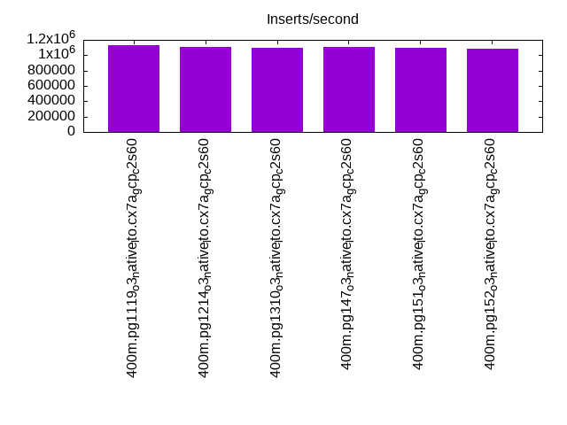
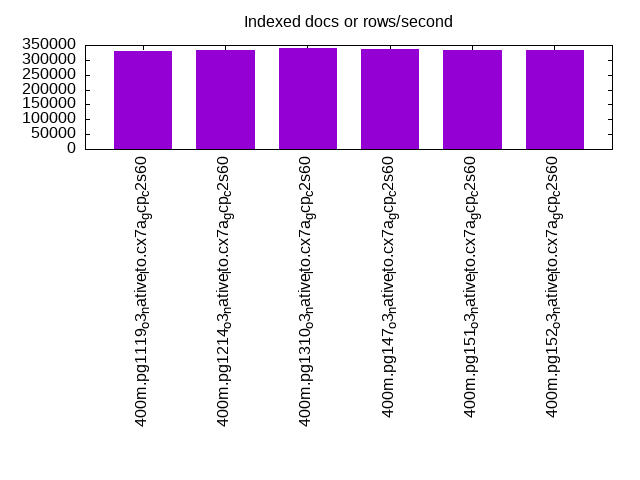
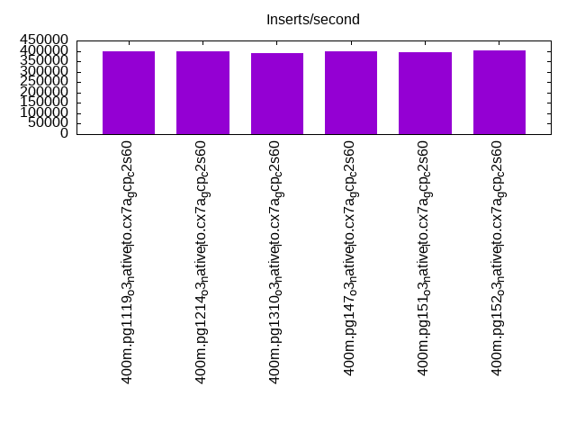
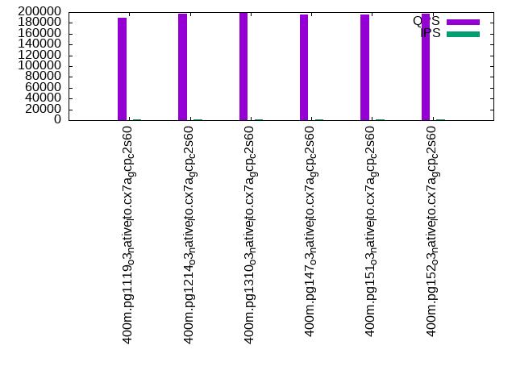
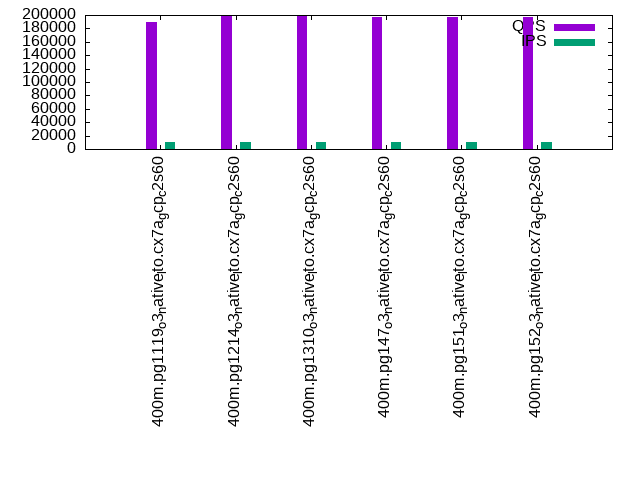
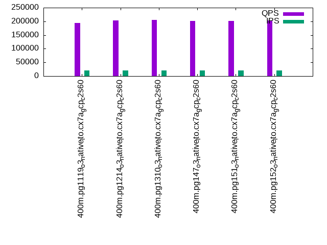

This is a report for the insert benchmark with 400M docs and 20 client(s). It is generated by scripts (bash, awk, sed) and Tufte might not be impressed. An overview of the insert benchmark is here and a short update is here. Below, by DBMS, I mean DBMS+version.config. An example is my8020.c10b40 where my means MySQL, 8020 is version 8.0.20 and c10b40 is the name for the configuration file.
The test server is c2-standard-60 from GCP with 30 cores, hyperthreads disabled, 240G RAM and 3T of NVMe (XFS with RAID0 over 8 devices). The benchmark was run with 20 clients and there were 1 or 2 connections per client (1 for queries, 1 for inserts). It uses 1 table. It loads 400M rows without secondary indexes, creates secondary indexes, loads another 400M rows per table then does 3 read+write tests for one hour each that do queries as fast as possible with 100, 500 and then 1000 writes/second/client concurrent with the queries. The database is cached by the storage engine and the only IO is for writes. Clients and the DBMS share one server. The per-database configs are in the per-database subdirectories here.
The tested DBMS are:
The numbers are inserts/s for l.i0 and l.i1, indexed docs (or rows) /s for l.x and queries/s for q*.2. The values are the average rate over the entire test for inserts (IPS) and queries (QPS). The range of values for IPS and QPS is split into 3 parts: bottom 25%, middle 50%, top 25%. Values in the bottom 25% have a red background, values in the top 25% have a green background and values in the middle have no color. A gray background is used for values that can be ignored because the DBMS did not sustain the target insert rate. Red backgrounds are not used when the minimum value is within 80% of the max value.
| dbms | l.i0 | l.x | l.i1 | q100.1 | q500.1 | q1000.1 |
|---|---|---|---|---|---|---|
| 400m.pg1119_o3_native_lto.cx7a_gcp_c2s60 | 1129944 | 330661 | 399600 | 188921 | 189090 | 194131 |
| 400m.pg1214_o3_native_lto.cx7a_gcp_c2s60 | 1108033 | 334252 | 398804 | 197188 | 198630 | 204002 |
| 400m.pg1310_o3_native_lto.cx7a_gcp_c2s60 | 1095890 | 338781 | 388350 | 197843 | 199177 | 204662 |
| 400m.pg147_o3_native_lto.cx7a_gcp_c2s60 | 1108033 | 337068 | 400000 | 196052 | 197464 | 201219 |
| 400m.pg151_o3_native_lto.cx7a_gcp_c2s60 | 1092896 | 333695 | 394477 | 195775 | 196554 | 201918 |
| 400m.pg152_o3_native_lto.cx7a_gcp_c2s60 | 1084011 | 333139 | 402820 | 197053 | 197432 | 202487 |
This table has relative throughput, throughput for the DBMS relative to the DBMS in the first line, using the absolute throughput from the previous table.
| dbms | l.i0 | l.x | l.i1 | q100.1 | q500.1 | q1000.1 |
|---|---|---|---|---|---|---|
| 400m.pg1119_o3_native_lto.cx7a_gcp_c2s60 | 1.00 | 1.00 | 1.00 | 1.00 | 1.00 | 1.00 |
| 400m.pg1214_o3_native_lto.cx7a_gcp_c2s60 | 0.98 | 1.01 | 1.00 | 1.04 | 1.05 | 1.05 |
| 400m.pg1310_o3_native_lto.cx7a_gcp_c2s60 | 0.97 | 1.02 | 0.97 | 1.05 | 1.05 | 1.05 |
| 400m.pg147_o3_native_lto.cx7a_gcp_c2s60 | 0.98 | 1.02 | 1.00 | 1.04 | 1.04 | 1.04 |
| 400m.pg151_o3_native_lto.cx7a_gcp_c2s60 | 0.97 | 1.01 | 0.99 | 1.04 | 1.04 | 1.04 |
| 400m.pg152_o3_native_lto.cx7a_gcp_c2s60 | 0.96 | 1.01 | 1.01 | 1.04 | 1.04 | 1.04 |
This lists the average rate of inserts/s for the tests that do inserts concurrent with queries. For such tests the query rate is listed in the table above. The read+write tests are setup so that the insert rate should match the target rate every second. Cells that are not at least 95% of the target have a red background to indicate a failure to satisfy the target.
| dbms | q100.1 | q500.1 | q1000.1 |
|---|---|---|---|
| pg1119_o3_native_lto.cx7a_gcp_c2s60 | 1976 | 9885 | 19769 |
| pg1214_o3_native_lto.cx7a_gcp_c2s60 | 1976 | 9885 | 19769 |
| pg1310_o3_native_lto.cx7a_gcp_c2s60 | 1976 | 9885 | 19769 |
| pg147_o3_native_lto.cx7a_gcp_c2s60 | 1976 | 9885 | 19769 |
| pg151_o3_native_lto.cx7a_gcp_c2s60 | 1976 | 9890 | 19769 |
| pg152_o3_native_lto.cx7a_gcp_c2s60 | 1976 | 9885 | 19769 |
| target | 2000 | 10000 | 20000 |
l.i0: load without secondary indexes. Graphs for performance per 1-second interval are here.
Average throughput:
Insert response time histogram: each cell has the percentage of responses that take <= the time in the header and max is the max response time in seconds. For the max column values in the top 25% of the range have a red background and in the bottom 25% of the range have a green background. The red background is not used when the min value is within 80% of the max value.
| dbms | 256us | 1ms | 4ms | 16ms | 64ms | 256ms | 1s | 4s | 16s | gt | max |
|---|---|---|---|---|---|---|---|---|---|---|---|
| pg1119_o3_native_lto.cx7a_gcp_c2s60 | 27.058 | 69.873 | 3.012 | 0.015 | 0.031 | 0.011 | 0.612 | ||||
| pg1214_o3_native_lto.cx7a_gcp_c2s60 | 21.451 | 75.212 | 3.285 | 0.013 | 0.028 | 0.010 | 0.001 | 1.221 | |||
| pg1310_o3_native_lto.cx7a_gcp_c2s60 | 25.335 | 70.950 | 3.657 | 0.024 | 0.025 | 0.010 | 0.813 | ||||
| pg147_o3_native_lto.cx7a_gcp_c2s60 | 23.912 | 72.914 | 3.121 | 0.015 | 0.027 | 0.011 | nonzero | 1.883 | |||
| pg151_o3_native_lto.cx7a_gcp_c2s60 | 24.912 | 71.498 | 3.535 | 0.016 | 0.029 | 0.011 | 0.610 | ||||
| pg152_o3_native_lto.cx7a_gcp_c2s60 | 26.640 | 69.507 | 3.761 | 0.053 | 0.024 | 0.015 | 0.692 |
Performance metrics for the DBMS listed above. Some are normalized by throughput, others are not. Legend for results is here.
ips qps rps rmbps wps wmbps rpq rkbpq wpi wkbpi csps cpups cspq cpupq dbgb1 dbgb2 rss maxop p50 p99 tag 1129944 0 0 0.0 1731.1 432.9 0.000 0.000 0.002 0.392 334665 58.7 0.296 16 44.2 114.1 NA 0.612 62531 23674 400m.pg1119_o3_native_lto.cx7a_gcp_c2s60 1108033 0 0 0.0 1708.6 424.0 0.000 0.000 0.002 0.392 304461 58.5 0.275 16 43.0 112.3 0.0 1.221 61233 19279 400m.pg1214_o3_native_lto.cx7a_gcp_c2s60 1095890 0 0 0.0 1703.1 424.4 0.000 0.000 0.002 0.397 336844 57.1 0.307 16 43.0 114.9 NA 0.813 60833 16681 400m.pg1310_o3_native_lto.cx7a_gcp_c2s60 1108033 0 0 0.0 1619.2 412.1 0.000 0.000 0.001 0.381 305716 57.7 0.276 16 43.0 114.4 NA 1.883 61533 20177 400m.pg147_o3_native_lto.cx7a_gcp_c2s60 1092896 0 0 0.0 1633.2 419.1 0.000 0.000 0.001 0.393 345431 57.0 0.316 16 43.0 115.1 NA 0.610 60333 19078 400m.pg151_o3_native_lto.cx7a_gcp_c2s60 1084011 0 0 0.0 1701.2 450.7 0.000 0.000 0.002 0.426 322150 56.5 0.297 16 43.0 122.5 0.0 0.692 61730 12878 400m.pg152_o3_native_lto.cx7a_gcp_c2s60
l.x: create secondary indexes.
Average throughput:
Performance metrics for the DBMS listed above. Some are normalized by throughput, others are not. Legend for results is here.
ips qps rps rmbps wps wmbps rpq rkbpq wpi wkbpi csps cpups cspq cpupq dbgb1 dbgb2 rss maxop p50 p99 tag 330661 0 72 0.4 648.3 138.0 0.000 0.001 0.002 0.427 1953 3.3 0.006 3 79.5 155.8 0.0 0.002 NA NA 400m.pg1119_o3_native_lto.cx7a_gcp_c2s60 334252 0 108 0.6 642.9 134.7 0.000 0.002 0.002 0.413 1962 3.3 0.006 3 78.3 152.2 0.0 0.002 NA NA 400m.pg1214_o3_native_lto.cx7a_gcp_c2s60 338781 0 0 0.0 401.6 101.7 0.000 0.000 0.001 0.308 1427 3.3 0.004 3 78.3 150.8 0.0 0.016 NA NA 400m.pg1310_o3_native_lto.cx7a_gcp_c2s60 337068 0 0 0.0 425.6 105.0 0.000 0.000 0.001 0.319 1073 3.1 0.003 3 78.3 152.8 0.0 0.029 NA NA 400m.pg147_o3_native_lto.cx7a_gcp_c2s60 333695 0 0 0.0 437.2 108.2 0.000 0.000 0.001 0.332 1078 3.0 0.003 3 78.3 152.4 0.0 0.019 NA NA 400m.pg151_o3_native_lto.cx7a_gcp_c2s60 333139 0 0 0.0 436.3 105.5 0.000 0.000 0.001 0.324 1033 3.0 0.003 3 78.3 157.8 0.0 0.002 NA NA 400m.pg152_o3_native_lto.cx7a_gcp_c2s60
l.i1: continue load after secondary indexes created. Graphs for performance per 1-second interval are here.
Average throughput:
Insert response time histogram: each cell has the percentage of responses that take <= the time in the header and max is the max response time in seconds. For the max column values in the top 25% of the range have a red background and in the bottom 25% of the range have a green background. The red background is not used when the min value is within 80% of the max value.
| dbms | 256us | 1ms | 4ms | 16ms | 64ms | 256ms | 1s | 4s | 16s | gt | max |
|---|---|---|---|---|---|---|---|---|---|---|---|
| pg1119_o3_native_lto.cx7a_gcp_c2s60 | 94.823 | 4.216 | 0.909 | 0.038 | 0.014 | 0.001 | 1.867 | ||||
| pg1214_o3_native_lto.cx7a_gcp_c2s60 | 94.747 | 4.361 | 0.844 | 0.033 | 0.014 | 0.001 | 2.045 | ||||
| pg1310_o3_native_lto.cx7a_gcp_c2s60 | 94.373 | 4.686 | 0.895 | 0.034 | 0.012 | nonzero | 1.749 | ||||
| pg147_o3_native_lto.cx7a_gcp_c2s60 | 94.687 | 4.372 | 0.894 | 0.031 | 0.016 | 0.001 | 1.888 | ||||
| pg151_o3_native_lto.cx7a_gcp_c2s60 | 94.534 | 4.614 | 0.808 | 0.030 | 0.014 | 0.911 | |||||
| pg152_o3_native_lto.cx7a_gcp_c2s60 | 94.671 | 4.489 | 0.794 | 0.033 | 0.013 | 0.884 |
Performance metrics for the DBMS listed above. Some are normalized by throughput, others are not. Legend for results is here.
ips qps rps rmbps wps wmbps rpq rkbpq wpi wkbpi csps cpups cspq cpupq dbgb1 dbgb2 rss maxop p50 p99 tag 399600 0 2508 12.8 2529.3 429.1 0.006 0.033 0.006 1.100 263356 53.1 0.659 40 176.5 314.9 0.0 1.867 24722 1398 400m.pg1119_o3_native_lto.cx7a_gcp_c2s60 398804 0 2293 13.4 2499.8 429.2 0.006 0.034 0.006 1.102 268418 53.7 0.673 40 170.2 307.1 0.0 2.045 24473 1798 400m.pg1214_o3_native_lto.cx7a_gcp_c2s60 388350 0 2517 14.1 2550.9 455.3 0.006 0.037 0.007 1.201 301266 52.7 0.776 41 170.2 316.8 NA 1.749 23733 1499 400m.pg1310_o3_native_lto.cx7a_gcp_c2s60 400000 0 2516 11.6 2416.5 460.3 0.006 0.030 0.006 1.178 257699 53.1 0.644 40 170.2 328.0 NA 1.888 24673 1749 400m.pg147_o3_native_lto.cx7a_gcp_c2s60 394477 0 1979 14.8 2424.2 444.5 0.005 0.039 0.006 1.154 301611 52.8 0.765 40 170.2 326.0 NA 0.911 24024 2048 400m.pg151_o3_native_lto.cx7a_gcp_c2s60 402820 0 1937 13.9 2427.0 448.8 0.005 0.035 0.006 1.141 283063 53.5 0.703 40 170.2 330.6 0.0 0.884 24522 2547 400m.pg152_o3_native_lto.cx7a_gcp_c2s60
q100.1: range queries with 100 insert/s per client. Graphs for performance per 1-second interval are here.
Average throughput:
Query response time histogram: each cell has the percentage of responses that take <= the time in the header and max is the max response time in seconds. For max values in the top 25% of the range have a red background and in the bottom 25% of the range have a green background. The red background is not used when the min value is within 80% of the max value.
| dbms | 256us | 1ms | 4ms | 16ms | 64ms | 256ms | 1s | 4s | 16s | gt | max |
|---|---|---|---|---|---|---|---|---|---|---|---|
| pg1119_o3_native_lto.cx7a_gcp_c2s60 | 99.966 | 0.027 | 0.006 | 0.001 | nonzero | nonzero | nonzero | 1.654 | |||
| pg1214_o3_native_lto.cx7a_gcp_c2s60 | 99.973 | 0.020 | 0.006 | 0.001 | nonzero | 0.025 | |||||
| pg1310_o3_native_lto.cx7a_gcp_c2s60 | 99.974 | 0.019 | 0.006 | 0.001 | nonzero | 0.025 | |||||
| pg147_o3_native_lto.cx7a_gcp_c2s60 | 99.974 | 0.019 | 0.006 | 0.001 | nonzero | 0.023 | |||||
| pg151_o3_native_lto.cx7a_gcp_c2s60 | 99.974 | 0.019 | 0.006 | 0.001 | nonzero | 0.024 | |||||
| pg152_o3_native_lto.cx7a_gcp_c2s60 | 99.974 | 0.019 | 0.006 | 0.001 | nonzero | 0.024 |
Insert response time histogram: each cell has the percentage of responses that take <= the time in the header and max is the max response time in seconds. For max values in the top 25% of the range have a red background and in the bottom 25% of the range have a green background. The red background is not used when the min value is within 80% of the max value.
| dbms | 256us | 1ms | 4ms | 16ms | 64ms | 256ms | 1s | 4s | 16s | gt | max |
|---|---|---|---|---|---|---|---|---|---|---|---|
| pg1119_o3_native_lto.cx7a_gcp_c2s60 | 98.375 | 1.350 | 0.272 | 0.001 | 0.001 | 1.653 | |||||
| pg1214_o3_native_lto.cx7a_gcp_c2s60 | 98.225 | 1.449 | 0.314 | 0.010 | 0.001 | 0.001 | 1.807 | ||||
| pg1310_o3_native_lto.cx7a_gcp_c2s60 | 98.401 | 1.363 | 0.236 | 0.045 | |||||||
| pg147_o3_native_lto.cx7a_gcp_c2s60 | 98.221 | 1.487 | 0.272 | 0.010 | 0.010 | 0.274 | |||||
| pg151_o3_native_lto.cx7a_gcp_c2s60 | 97.812 | 1.815 | 0.372 | 0.056 | |||||||
| pg152_o3_native_lto.cx7a_gcp_c2s60 | 98.453 | 1.325 | 0.199 | 0.011 | 0.013 | 0.347 |
Performance metrics for the DBMS listed above. Some are normalized by throughput, others are not. Legend for results is here.
ips qps rps rmbps wps wmbps rpq rkbpq wpi wkbpi csps cpups cspq cpupq dbgb1 dbgb2 rss maxop p50 p99 tag 1976 188921 0 0.0 2907.9 68.0 0.000 0.000 1.472 35.231 670220 63.0 3.548 100 177.6 291.9 0.0 1.654 9350 8966 400m.pg1119_o3_native_lto.cx7a_gcp_c2s60 1976 197188 0 0.0 2782.2 74.0 0.000 0.000 1.408 38.348 698835 62.9 3.544 96 171.1 291.5 0.0 0.025 9861 9366 400m.pg1214_o3_native_lto.cx7a_gcp_c2s60 1976 197843 1 0.0 2558.0 67.6 0.000 0.000 1.295 35.012 701944 62.9 3.548 95 171.1 274.8 0.0 0.025 9877 9430 400m.pg1310_o3_native_lto.cx7a_gcp_c2s60 1976 196052 1 0.0 2581.0 63.8 0.000 0.000 1.306 33.064 698805 63.0 3.564 96 171.1 312.3 0.0 0.023 9765 9429 400m.pg147_o3_native_lto.cx7a_gcp_c2s60 1976 195775 1 0.0 2510.3 63.0 0.000 0.000 1.271 32.641 697644 62.9 3.564 96 171.1 310.9 0.0 0.024 9685 9318 400m.pg151_o3_native_lto.cx7a_gcp_c2s60 1976 197053 0 0.0 2561.3 62.9 0.000 0.000 1.296 32.622 699264 63.0 3.549 96 171.1 307.8 0.0 0.024 9717 9318 400m.pg152_o3_native_lto.cx7a_gcp_c2s60
q500.1: range queries with 500 insert/s per client. Graphs for performance per 1-second interval are here.
Average throughput:
Query response time histogram: each cell has the percentage of responses that take <= the time in the header and max is the max response time in seconds. For max values in the top 25% of the range have a red background and in the bottom 25% of the range have a green background. The red background is not used when the min value is within 80% of the max value.
| dbms | 256us | 1ms | 4ms | 16ms | 64ms | 256ms | 1s | 4s | 16s | gt | max |
|---|---|---|---|---|---|---|---|---|---|---|---|
| pg1119_o3_native_lto.cx7a_gcp_c2s60 | 99.904 | 0.066 | 0.027 | 0.003 | nonzero | nonzero | 0.126 | ||||
| pg1214_o3_native_lto.cx7a_gcp_c2s60 | 99.917 | 0.054 | 0.026 | 0.003 | nonzero | 0.035 | |||||
| pg1310_o3_native_lto.cx7a_gcp_c2s60 | 99.916 | 0.055 | 0.026 | 0.002 | nonzero | 0.042 | |||||
| pg147_o3_native_lto.cx7a_gcp_c2s60 | 99.915 | 0.055 | 0.026 | 0.003 | nonzero | nonzero | nonzero | 0.352 | |||
| pg151_o3_native_lto.cx7a_gcp_c2s60 | 99.914 | 0.057 | 0.026 | 0.003 | nonzero | nonzero | 0.120 | ||||
| pg152_o3_native_lto.cx7a_gcp_c2s60 | 99.916 | 0.055 | 0.026 | 0.003 | nonzero | 0.035 |
Insert response time histogram: each cell has the percentage of responses that take <= the time in the header and max is the max response time in seconds. For max values in the top 25% of the range have a red background and in the bottom 25% of the range have a green background. The red background is not used when the min value is within 80% of the max value.
| dbms | 256us | 1ms | 4ms | 16ms | 64ms | 256ms | 1s | 4s | 16s | gt | max |
|---|---|---|---|---|---|---|---|---|---|---|---|
| pg1119_o3_native_lto.cx7a_gcp_c2s60 | 51.664 | 28.431 | 19.621 | 0.284 | 0.188 | ||||||
| pg1214_o3_native_lto.cx7a_gcp_c2s60 | 51.460 | 28.213 | 19.995 | 0.333 | 0.185 | ||||||
| pg1310_o3_native_lto.cx7a_gcp_c2s60 | 52.581 | 27.975 | 19.152 | 0.292 | 0.171 | ||||||
| pg147_o3_native_lto.cx7a_gcp_c2s60 | 52.292 | 27.560 | 19.876 | 0.266 | 0.006 | 0.473 | |||||
| pg151_o3_native_lto.cx7a_gcp_c2s60 | 52.579 | 27.501 | 19.656 | 0.264 | 0.171 | ||||||
| pg152_o3_native_lto.cx7a_gcp_c2s60 | 52.591 | 27.501 | 19.639 | 0.270 | 0.228 |
Performance metrics for the DBMS listed above. Some are normalized by throughput, others are not. Legend for results is here.
ips qps rps rmbps wps wmbps rpq rkbpq wpi wkbpi csps cpups cspq cpupq dbgb1 dbgb2 rss maxop p50 p99 tag 9885 189090 0 0.0 5259.5 158.1 0.000 0.000 0.532 16.378 659524 64.1 3.488 102 183.7 258.5 0.0 0.126 9366 8934 400m.pg1119_o3_native_lto.cx7a_gcp_c2s60 9885 198630 0 0.0 4782.9 153.6 0.000 0.000 0.484 15.910 691619 64.1 3.482 97 176.0 255.8 0.0 0.035 9829 9318 400m.pg1214_o3_native_lto.cx7a_gcp_c2s60 9885 199177 0 0.0 4670.3 149.7 0.000 0.000 0.472 15.512 692523 64.1 3.477 97 176.0 243.5 0.0 0.042 9865 9365 400m.pg1310_o3_native_lto.cx7a_gcp_c2s60 9885 197464 0 0.0 4744.2 144.9 0.000 0.000 0.480 15.010 689664 64.1 3.493 97 176.0 266.8 0.0 0.352 9781 9306 400m.pg147_o3_native_lto.cx7a_gcp_c2s60 9890 196554 0 0.0 4560.7 141.6 0.000 0.000 0.461 14.659 686810 64.1 3.494 98 176.0 260.3 0.0 0.120 9813 9350 400m.pg151_o3_native_lto.cx7a_gcp_c2s60 9885 197432 2 0.0 4633.5 143.6 0.000 0.000 0.469 14.880 689200 64.1 3.491 97 176.0 259.4 0.0 0.035 9801 9334 400m.pg152_o3_native_lto.cx7a_gcp_c2s60
q1000.1: range queries with 1000 insert/s per client. Graphs for performance per 1-second interval are here.
Average throughput:
Query response time histogram: each cell has the percentage of responses that take <= the time in the header and max is the max response time in seconds. For max values in the top 25% of the range have a red background and in the bottom 25% of the range have a green background. The red background is not used when the min value is within 80% of the max value.
| dbms | 256us | 1ms | 4ms | 16ms | 64ms | 256ms | 1s | 4s | 16s | gt | max |
|---|---|---|---|---|---|---|---|---|---|---|---|
| pg1119_o3_native_lto.cx7a_gcp_c2s60 | 99.857 | 0.102 | 0.038 | 0.004 | nonzero | 0.049 | |||||
| pg1214_o3_native_lto.cx7a_gcp_c2s60 | 99.865 | 0.094 | 0.038 | 0.004 | nonzero | 0.036 | |||||
| pg1310_o3_native_lto.cx7a_gcp_c2s60 | 99.867 | 0.093 | 0.036 | 0.003 | nonzero | 0.037 | |||||
| pg147_o3_native_lto.cx7a_gcp_c2s60 | 99.861 | 0.097 | 0.038 | 0.004 | nonzero | 0.036 | |||||
| pg151_o3_native_lto.cx7a_gcp_c2s60 | 99.861 | 0.098 | 0.037 | 0.004 | nonzero | 0.054 | |||||
| pg152_o3_native_lto.cx7a_gcp_c2s60 | 99.865 | 0.095 | 0.037 | 0.004 | nonzero | 0.033 |
Insert response time histogram: each cell has the percentage of responses that take <= the time in the header and max is the max response time in seconds. For max values in the top 25% of the range have a red background and in the bottom 25% of the range have a green background. The red background is not used when the min value is within 80% of the max value.
| dbms | 256us | 1ms | 4ms | 16ms | 64ms | 256ms | 1s | 4s | 16s | gt | max |
|---|---|---|---|---|---|---|---|---|---|---|---|
| pg1119_o3_native_lto.cx7a_gcp_c2s60 | 63.720 | 24.445 | 11.592 | 0.242 | 0.187 | ||||||
| pg1214_o3_native_lto.cx7a_gcp_c2s60 | 60.853 | 25.980 | 12.861 | 0.307 | 0.204 | ||||||
| pg1310_o3_native_lto.cx7a_gcp_c2s60 | 61.971 | 25.846 | 11.925 | 0.258 | 0.169 | ||||||
| pg147_o3_native_lto.cx7a_gcp_c2s60 | 61.064 | 26.606 | 12.103 | 0.227 | 0.201 | ||||||
| pg151_o3_native_lto.cx7a_gcp_c2s60 | 61.153 | 26.291 | 12.328 | 0.228 | 0.163 | ||||||
| pg152_o3_native_lto.cx7a_gcp_c2s60 | 60.778 | 26.775 | 12.220 | 0.226 | 0.216 |
Performance metrics for the DBMS listed above. Some are normalized by throughput, others are not. Legend for results is here.
ips qps rps rmbps wps wmbps rpq rkbpq wpi wkbpi csps cpups cspq cpupq dbgb1 dbgb2 rss maxop p50 p99 tag 19769 194131 4 0.0 4947.6 221.0 0.000 0.000 0.250 11.449 653160 65.5 3.365 101 197.2 262.6 0.0 0.049 9594 8954 400m.pg1119_o3_native_lto.cx7a_gcp_c2s60 19769 204002 3 0.0 4426.2 217.5 0.000 0.000 0.224 11.264 684034 65.4 3.353 96 189.4 258.9 0.0 0.036 10165 9446 400m.pg1214_o3_native_lto.cx7a_gcp_c2s60 19769 204662 0 0.0 4359.9 208.6 0.000 0.000 0.221 10.805 686147 65.4 3.353 96 189.4 252.6 0.0 0.037 10149 9446 400m.pg1310_o3_native_lto.cx7a_gcp_c2s60 19769 201219 0 0.0 4705.3 199.2 0.000 0.000 0.238 10.320 679712 65.2 3.378 97 189.4 270.5 0.0 0.036 9957 9286 400m.pg147_o3_native_lto.cx7a_gcp_c2s60 19769 201918 0 0.0 4739.5 203.3 0.000 0.000 0.240 10.532 681698 65.2 3.376 97 189.4 268.9 0.0 0.054 10053 9398 400m.pg151_o3_native_lto.cx7a_gcp_c2s60 19769 202487 0 0.0 4732.2 200.0 0.000 0.000 0.239 10.357 682184 65.3 3.369 97 189.4 268.3 0.0 0.033 10121 9430 400m.pg152_o3_native_lto.cx7a_gcp_c2s60
l.i0: load without secondary indexes
Performance metrics for all DBMS, not just the ones listed above. Some are normalized by throughput, others are not. Legend for results is here.
ips qps rps rmbps wps wmbps rpq rkbpq wpi wkbpi csps cpups cspq cpupq dbgb1 dbgb2 rss maxop p50 p99 tag 1129944 0 0 0.0 1731.1 432.9 0.000 0.000 0.002 0.392 334665 58.7 0.296 16 44.2 114.1 NA 0.612 62531 23674 400m.pg1119_o3_native_lto.cx7a_gcp_c2s60 1108033 0 0 0.0 1708.6 424.0 0.000 0.000 0.002 0.392 304461 58.5 0.275 16 43.0 112.3 0.0 1.221 61233 19279 400m.pg1214_o3_native_lto.cx7a_gcp_c2s60 1095890 0 0 0.0 1703.1 424.4 0.000 0.000 0.002 0.397 336844 57.1 0.307 16 43.0 114.9 NA 0.813 60833 16681 400m.pg1310_o3_native_lto.cx7a_gcp_c2s60 1108033 0 0 0.0 1619.2 412.1 0.000 0.000 0.001 0.381 305716 57.7 0.276 16 43.0 114.4 NA 1.883 61533 20177 400m.pg147_o3_native_lto.cx7a_gcp_c2s60 1092896 0 0 0.0 1633.2 419.1 0.000 0.000 0.001 0.393 345431 57.0 0.316 16 43.0 115.1 NA 0.610 60333 19078 400m.pg151_o3_native_lto.cx7a_gcp_c2s60 1084011 0 0 0.0 1701.2 450.7 0.000 0.000 0.002 0.426 322150 56.5 0.297 16 43.0 122.5 0.0 0.692 61730 12878 400m.pg152_o3_native_lto.cx7a_gcp_c2s60
l.x: create secondary indexes
Performance metrics for all DBMS, not just the ones listed above. Some are normalized by throughput, others are not. Legend for results is here.
ips qps rps rmbps wps wmbps rpq rkbpq wpi wkbpi csps cpups cspq cpupq dbgb1 dbgb2 rss maxop p50 p99 tag 330661 0 72 0.4 648.3 138.0 0.000 0.001 0.002 0.427 1953 3.3 0.006 3 79.5 155.8 0.0 0.002 NA NA 400m.pg1119_o3_native_lto.cx7a_gcp_c2s60 334252 0 108 0.6 642.9 134.7 0.000 0.002 0.002 0.413 1962 3.3 0.006 3 78.3 152.2 0.0 0.002 NA NA 400m.pg1214_o3_native_lto.cx7a_gcp_c2s60 338781 0 0 0.0 401.6 101.7 0.000 0.000 0.001 0.308 1427 3.3 0.004 3 78.3 150.8 0.0 0.016 NA NA 400m.pg1310_o3_native_lto.cx7a_gcp_c2s60 337068 0 0 0.0 425.6 105.0 0.000 0.000 0.001 0.319 1073 3.1 0.003 3 78.3 152.8 0.0 0.029 NA NA 400m.pg147_o3_native_lto.cx7a_gcp_c2s60 333695 0 0 0.0 437.2 108.2 0.000 0.000 0.001 0.332 1078 3.0 0.003 3 78.3 152.4 0.0 0.019 NA NA 400m.pg151_o3_native_lto.cx7a_gcp_c2s60 333139 0 0 0.0 436.3 105.5 0.000 0.000 0.001 0.324 1033 3.0 0.003 3 78.3 157.8 0.0 0.002 NA NA 400m.pg152_o3_native_lto.cx7a_gcp_c2s60
l.i1: continue load after secondary indexes created
Performance metrics for all DBMS, not just the ones listed above. Some are normalized by throughput, others are not. Legend for results is here.
ips qps rps rmbps wps wmbps rpq rkbpq wpi wkbpi csps cpups cspq cpupq dbgb1 dbgb2 rss maxop p50 p99 tag 399600 0 2508 12.8 2529.3 429.1 0.006 0.033 0.006 1.100 263356 53.1 0.659 40 176.5 314.9 0.0 1.867 24722 1398 400m.pg1119_o3_native_lto.cx7a_gcp_c2s60 398804 0 2293 13.4 2499.8 429.2 0.006 0.034 0.006 1.102 268418 53.7 0.673 40 170.2 307.1 0.0 2.045 24473 1798 400m.pg1214_o3_native_lto.cx7a_gcp_c2s60 388350 0 2517 14.1 2550.9 455.3 0.006 0.037 0.007 1.201 301266 52.7 0.776 41 170.2 316.8 NA 1.749 23733 1499 400m.pg1310_o3_native_lto.cx7a_gcp_c2s60 400000 0 2516 11.6 2416.5 460.3 0.006 0.030 0.006 1.178 257699 53.1 0.644 40 170.2 328.0 NA 1.888 24673 1749 400m.pg147_o3_native_lto.cx7a_gcp_c2s60 394477 0 1979 14.8 2424.2 444.5 0.005 0.039 0.006 1.154 301611 52.8 0.765 40 170.2 326.0 NA 0.911 24024 2048 400m.pg151_o3_native_lto.cx7a_gcp_c2s60 402820 0 1937 13.9 2427.0 448.8 0.005 0.035 0.006 1.141 283063 53.5 0.703 40 170.2 330.6 0.0 0.884 24522 2547 400m.pg152_o3_native_lto.cx7a_gcp_c2s60
q100.1: range queries with 100 insert/s per client
Performance metrics for all DBMS, not just the ones listed above. Some are normalized by throughput, others are not. Legend for results is here.
ips qps rps rmbps wps wmbps rpq rkbpq wpi wkbpi csps cpups cspq cpupq dbgb1 dbgb2 rss maxop p50 p99 tag 1976 188921 0 0.0 2907.9 68.0 0.000 0.000 1.472 35.231 670220 63.0 3.548 100 177.6 291.9 0.0 1.654 9350 8966 400m.pg1119_o3_native_lto.cx7a_gcp_c2s60 1976 197188 0 0.0 2782.2 74.0 0.000 0.000 1.408 38.348 698835 62.9 3.544 96 171.1 291.5 0.0 0.025 9861 9366 400m.pg1214_o3_native_lto.cx7a_gcp_c2s60 1976 197843 1 0.0 2558.0 67.6 0.000 0.000 1.295 35.012 701944 62.9 3.548 95 171.1 274.8 0.0 0.025 9877 9430 400m.pg1310_o3_native_lto.cx7a_gcp_c2s60 1976 196052 1 0.0 2581.0 63.8 0.000 0.000 1.306 33.064 698805 63.0 3.564 96 171.1 312.3 0.0 0.023 9765 9429 400m.pg147_o3_native_lto.cx7a_gcp_c2s60 1976 195775 1 0.0 2510.3 63.0 0.000 0.000 1.271 32.641 697644 62.9 3.564 96 171.1 310.9 0.0 0.024 9685 9318 400m.pg151_o3_native_lto.cx7a_gcp_c2s60 1976 197053 0 0.0 2561.3 62.9 0.000 0.000 1.296 32.622 699264 63.0 3.549 96 171.1 307.8 0.0 0.024 9717 9318 400m.pg152_o3_native_lto.cx7a_gcp_c2s60
q500.1: range queries with 500 insert/s per client
Performance metrics for all DBMS, not just the ones listed above. Some are normalized by throughput, others are not. Legend for results is here.
ips qps rps rmbps wps wmbps rpq rkbpq wpi wkbpi csps cpups cspq cpupq dbgb1 dbgb2 rss maxop p50 p99 tag 9885 189090 0 0.0 5259.5 158.1 0.000 0.000 0.532 16.378 659524 64.1 3.488 102 183.7 258.5 0.0 0.126 9366 8934 400m.pg1119_o3_native_lto.cx7a_gcp_c2s60 9885 198630 0 0.0 4782.9 153.6 0.000 0.000 0.484 15.910 691619 64.1 3.482 97 176.0 255.8 0.0 0.035 9829 9318 400m.pg1214_o3_native_lto.cx7a_gcp_c2s60 9885 199177 0 0.0 4670.3 149.7 0.000 0.000 0.472 15.512 692523 64.1 3.477 97 176.0 243.5 0.0 0.042 9865 9365 400m.pg1310_o3_native_lto.cx7a_gcp_c2s60 9885 197464 0 0.0 4744.2 144.9 0.000 0.000 0.480 15.010 689664 64.1 3.493 97 176.0 266.8 0.0 0.352 9781 9306 400m.pg147_o3_native_lto.cx7a_gcp_c2s60 9890 196554 0 0.0 4560.7 141.6 0.000 0.000 0.461 14.659 686810 64.1 3.494 98 176.0 260.3 0.0 0.120 9813 9350 400m.pg151_o3_native_lto.cx7a_gcp_c2s60 9885 197432 2 0.0 4633.5 143.6 0.000 0.000 0.469 14.880 689200 64.1 3.491 97 176.0 259.4 0.0 0.035 9801 9334 400m.pg152_o3_native_lto.cx7a_gcp_c2s60
q1000.1: range queries with 1000 insert/s per client
Performance metrics for all DBMS, not just the ones listed above. Some are normalized by throughput, others are not. Legend for results is here.
ips qps rps rmbps wps wmbps rpq rkbpq wpi wkbpi csps cpups cspq cpupq dbgb1 dbgb2 rss maxop p50 p99 tag 19769 194131 4 0.0 4947.6 221.0 0.000 0.000 0.250 11.449 653160 65.5 3.365 101 197.2 262.6 0.0 0.049 9594 8954 400m.pg1119_o3_native_lto.cx7a_gcp_c2s60 19769 204002 3 0.0 4426.2 217.5 0.000 0.000 0.224 11.264 684034 65.4 3.353 96 189.4 258.9 0.0 0.036 10165 9446 400m.pg1214_o3_native_lto.cx7a_gcp_c2s60 19769 204662 0 0.0 4359.9 208.6 0.000 0.000 0.221 10.805 686147 65.4 3.353 96 189.4 252.6 0.0 0.037 10149 9446 400m.pg1310_o3_native_lto.cx7a_gcp_c2s60 19769 201219 0 0.0 4705.3 199.2 0.000 0.000 0.238 10.320 679712 65.2 3.378 97 189.4 270.5 0.0 0.036 9957 9286 400m.pg147_o3_native_lto.cx7a_gcp_c2s60 19769 201918 0 0.0 4739.5 203.3 0.000 0.000 0.240 10.532 681698 65.2 3.376 97 189.4 268.9 0.0 0.054 10053 9398 400m.pg151_o3_native_lto.cx7a_gcp_c2s60 19769 202487 0 0.0 4732.2 200.0 0.000 0.000 0.239 10.357 682184 65.3 3.369 97 189.4 268.3 0.0 0.033 10121 9430 400m.pg152_o3_native_lto.cx7a_gcp_c2s60
Insert response time histogram
256us 1ms 4ms 16ms 64ms 256ms 1s 4s 16s gt max tag 0.000 27.058 69.873 3.012 0.015 0.031 0.011 0.000 0.000 0.000 0.612 pg1119_o3_native_lto.cx7a_gcp_c2s60 0.000 21.451 75.212 3.285 0.013 0.028 0.010 0.001 0.000 0.000 1.221 pg1214_o3_native_lto.cx7a_gcp_c2s60 0.000 25.335 70.950 3.657 0.024 0.025 0.010 0.000 0.000 0.000 0.813 pg1310_o3_native_lto.cx7a_gcp_c2s60 0.000 23.912 72.914 3.121 0.015 0.027 0.011 nonzero 0.000 0.000 1.883 pg147_o3_native_lto.cx7a_gcp_c2s60 0.000 24.912 71.498 3.535 0.016 0.029 0.011 0.000 0.000 0.000 0.610 pg151_o3_native_lto.cx7a_gcp_c2s60 0.000 26.640 69.507 3.761 0.053 0.024 0.015 0.000 0.000 0.000 0.692 pg152_o3_native_lto.cx7a_gcp_c2s60
TODO - determine whether there is data for create index response time
Insert response time histogram
256us 1ms 4ms 16ms 64ms 256ms 1s 4s 16s gt max tag 0.000 0.000 94.823 4.216 0.909 0.038 0.014 0.001 0.000 0.000 1.867 pg1119_o3_native_lto.cx7a_gcp_c2s60 0.000 0.000 94.747 4.361 0.844 0.033 0.014 0.001 0.000 0.000 2.045 pg1214_o3_native_lto.cx7a_gcp_c2s60 0.000 0.000 94.373 4.686 0.895 0.034 0.012 nonzero 0.000 0.000 1.749 pg1310_o3_native_lto.cx7a_gcp_c2s60 0.000 0.000 94.687 4.372 0.894 0.031 0.016 0.001 0.000 0.000 1.888 pg147_o3_native_lto.cx7a_gcp_c2s60 0.000 0.000 94.534 4.614 0.808 0.030 0.014 0.000 0.000 0.000 0.911 pg151_o3_native_lto.cx7a_gcp_c2s60 0.000 0.000 94.671 4.489 0.794 0.033 0.013 0.000 0.000 0.000 0.884 pg152_o3_native_lto.cx7a_gcp_c2s60
Query response time histogram
256us 1ms 4ms 16ms 64ms 256ms 1s 4s 16s gt max tag 99.966 0.027 0.006 0.001 nonzero 0.000 nonzero nonzero 0.000 0.000 1.654 pg1119_o3_native_lto.cx7a_gcp_c2s60 99.973 0.020 0.006 0.001 nonzero 0.000 0.000 0.000 0.000 0.000 0.025 pg1214_o3_native_lto.cx7a_gcp_c2s60 99.974 0.019 0.006 0.001 nonzero 0.000 0.000 0.000 0.000 0.000 0.025 pg1310_o3_native_lto.cx7a_gcp_c2s60 99.974 0.019 0.006 0.001 nonzero 0.000 0.000 0.000 0.000 0.000 0.023 pg147_o3_native_lto.cx7a_gcp_c2s60 99.974 0.019 0.006 0.001 nonzero 0.000 0.000 0.000 0.000 0.000 0.024 pg151_o3_native_lto.cx7a_gcp_c2s60 99.974 0.019 0.006 0.001 nonzero 0.000 0.000 0.000 0.000 0.000 0.024 pg152_o3_native_lto.cx7a_gcp_c2s60
Insert response time histogram
256us 1ms 4ms 16ms 64ms 256ms 1s 4s 16s gt max tag 0.000 0.000 98.375 1.350 0.272 0.000 0.001 0.001 0.000 0.000 1.653 pg1119_o3_native_lto.cx7a_gcp_c2s60 0.000 0.000 98.225 1.449 0.314 0.010 0.001 0.001 0.000 0.000 1.807 pg1214_o3_native_lto.cx7a_gcp_c2s60 0.000 0.000 98.401 1.363 0.236 0.000 0.000 0.000 0.000 0.000 0.045 pg1310_o3_native_lto.cx7a_gcp_c2s60 0.000 0.000 98.221 1.487 0.272 0.010 0.010 0.000 0.000 0.000 0.274 pg147_o3_native_lto.cx7a_gcp_c2s60 0.000 0.000 97.812 1.815 0.372 0.000 0.000 0.000 0.000 0.000 0.056 pg151_o3_native_lto.cx7a_gcp_c2s60 0.000 0.000 98.453 1.325 0.199 0.011 0.013 0.000 0.000 0.000 0.347 pg152_o3_native_lto.cx7a_gcp_c2s60
Query response time histogram
256us 1ms 4ms 16ms 64ms 256ms 1s 4s 16s gt max tag 99.904 0.066 0.027 0.003 nonzero nonzero 0.000 0.000 0.000 0.000 0.126 pg1119_o3_native_lto.cx7a_gcp_c2s60 99.917 0.054 0.026 0.003 nonzero 0.000 0.000 0.000 0.000 0.000 0.035 pg1214_o3_native_lto.cx7a_gcp_c2s60 99.916 0.055 0.026 0.002 nonzero 0.000 0.000 0.000 0.000 0.000 0.042 pg1310_o3_native_lto.cx7a_gcp_c2s60 99.915 0.055 0.026 0.003 nonzero nonzero nonzero 0.000 0.000 0.000 0.352 pg147_o3_native_lto.cx7a_gcp_c2s60 99.914 0.057 0.026 0.003 nonzero nonzero 0.000 0.000 0.000 0.000 0.120 pg151_o3_native_lto.cx7a_gcp_c2s60 99.916 0.055 0.026 0.003 nonzero 0.000 0.000 0.000 0.000 0.000 0.035 pg152_o3_native_lto.cx7a_gcp_c2s60
Insert response time histogram
256us 1ms 4ms 16ms 64ms 256ms 1s 4s 16s gt max tag 0.000 0.000 51.664 28.431 19.621 0.284 0.000 0.000 0.000 0.000 0.188 pg1119_o3_native_lto.cx7a_gcp_c2s60 0.000 0.000 51.460 28.213 19.995 0.333 0.000 0.000 0.000 0.000 0.185 pg1214_o3_native_lto.cx7a_gcp_c2s60 0.000 0.000 52.581 27.975 19.152 0.292 0.000 0.000 0.000 0.000 0.171 pg1310_o3_native_lto.cx7a_gcp_c2s60 0.000 0.000 52.292 27.560 19.876 0.266 0.006 0.000 0.000 0.000 0.473 pg147_o3_native_lto.cx7a_gcp_c2s60 0.000 0.000 52.579 27.501 19.656 0.264 0.000 0.000 0.000 0.000 0.171 pg151_o3_native_lto.cx7a_gcp_c2s60 0.000 0.000 52.591 27.501 19.639 0.270 0.000 0.000 0.000 0.000 0.228 pg152_o3_native_lto.cx7a_gcp_c2s60
Query response time histogram
256us 1ms 4ms 16ms 64ms 256ms 1s 4s 16s gt max tag 99.857 0.102 0.038 0.004 nonzero 0.000 0.000 0.000 0.000 0.000 0.049 pg1119_o3_native_lto.cx7a_gcp_c2s60 99.865 0.094 0.038 0.004 nonzero 0.000 0.000 0.000 0.000 0.000 0.036 pg1214_o3_native_lto.cx7a_gcp_c2s60 99.867 0.093 0.036 0.003 nonzero 0.000 0.000 0.000 0.000 0.000 0.037 pg1310_o3_native_lto.cx7a_gcp_c2s60 99.861 0.097 0.038 0.004 nonzero 0.000 0.000 0.000 0.000 0.000 0.036 pg147_o3_native_lto.cx7a_gcp_c2s60 99.861 0.098 0.037 0.004 nonzero 0.000 0.000 0.000 0.000 0.000 0.054 pg151_o3_native_lto.cx7a_gcp_c2s60 99.865 0.095 0.037 0.004 nonzero 0.000 0.000 0.000 0.000 0.000 0.033 pg152_o3_native_lto.cx7a_gcp_c2s60
Insert response time histogram
256us 1ms 4ms 16ms 64ms 256ms 1s 4s 16s gt max tag 0.000 0.000 63.720 24.445 11.592 0.242 0.000 0.000 0.000 0.000 0.187 pg1119_o3_native_lto.cx7a_gcp_c2s60 0.000 0.000 60.853 25.980 12.861 0.307 0.000 0.000 0.000 0.000 0.204 pg1214_o3_native_lto.cx7a_gcp_c2s60 0.000 0.000 61.971 25.846 11.925 0.258 0.000 0.000 0.000 0.000 0.169 pg1310_o3_native_lto.cx7a_gcp_c2s60 0.000 0.000 61.064 26.606 12.103 0.227 0.000 0.000 0.000 0.000 0.201 pg147_o3_native_lto.cx7a_gcp_c2s60 0.000 0.000 61.153 26.291 12.328 0.228 0.000 0.000 0.000 0.000 0.163 pg151_o3_native_lto.cx7a_gcp_c2s60 0.000 0.000 60.778 26.775 12.220 0.226 0.000 0.000 0.000 0.000 0.216 pg152_o3_native_lto.cx7a_gcp_c2s60